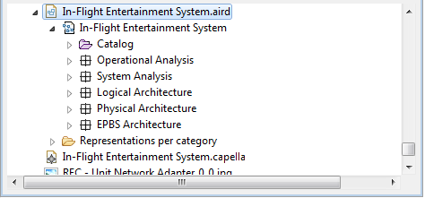

You can export a diagram to an image file. In order to do that right-click on the diagram and choose the menu Export diagram as image or on the icon present in the tab-bar.

You can:
It is possible to export all diagrams of a representations file at once.
In order to do that; right-click on your representations file (aird file) then choose the menu Export representations as image.


You can:
Before sending a diagram to a printer, it can be interesting to arrange the elements of the diagram to avoid them to be split by a page break, to help doing so use the command Diagram > View > page Breaks to display page breaks on the diagram background.

Note: Use the same command to hide the page breaks displayed on the diagram.